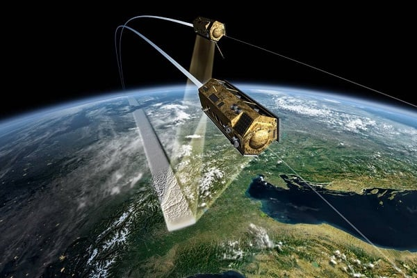
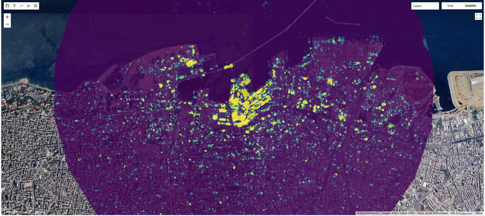
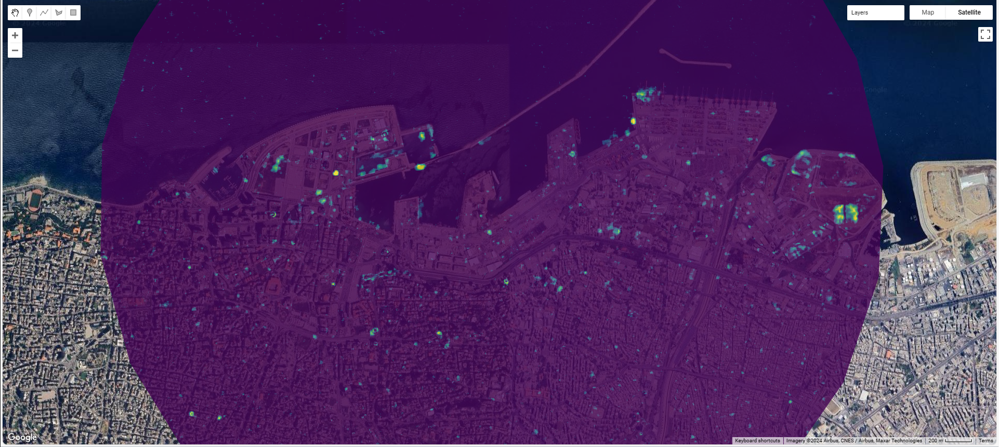
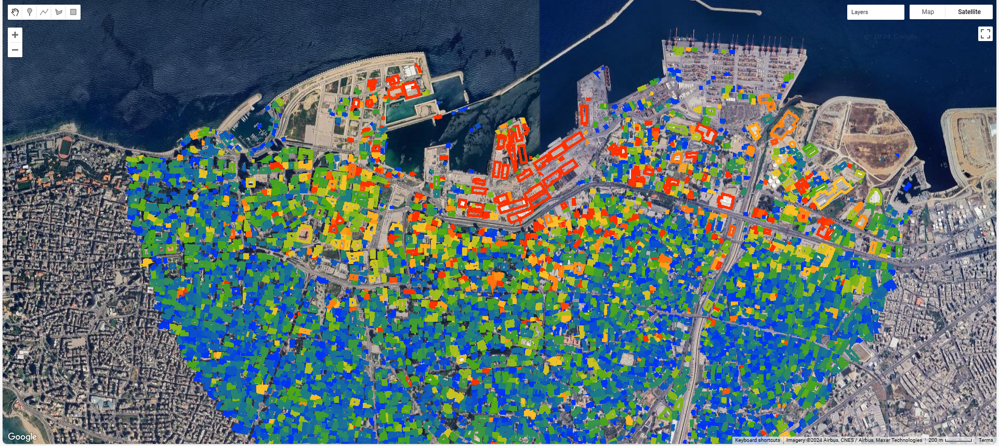

8 Week 8 - SAR in GEE
What we are learning this week is Synthetic Aperture Radar (SAR), a new sensor. In the following, I will summarize the theoretical knowledge, application areas, advantages and challenges of SAR.
8.1 Summary
8.1.1 Overview
Synthetic Aperture Radar (SAR) is a form of radar technology used to create high-resolution images of the Earth’s surface, regardless of weather conditions or time of day. Unlike optical imaging systems that rely on sunlight or other light sources, SAR actively emits microwave signals towards the Earth and captures the reflected signals to form images. This capability allows SAR to operate in any weather, including through clouds, rain, and at night, making it a powerful tool for Earth observation in various applications.
8.1.2 Working principle
There is no doubt that SAR is a powerful remote sensing technology, but the price is that its working principle is very complicated. I will elaborate briefly.
SAR operates on the principle of using the motion of the radar antenna over a target area to simulate a much larger antenna than physically possible to carry on an aircraft or satellite. This “synthetic” aperture is achieved by moving the radar platform and combining the radar echoes received over time from the same ground target as the platform moves (Sandia National Laboratories, n/d). SAR provides higher spatial resolution than the physical size of the radar antenna alone. The spatial resolution of SAR images is determined by the wavelength of the radar signals and the length of the synthetic aperture.

8.1.3 Applicable fields
SAR has a wide range of applications in environmental monitoring, earth-resource mapping, military systems, and more. It can provide terrain structural information for mineral exploration, oil spill boundaries on water, sea state and ice hazard maps, and reconnaissance and targeting information for military operations. SAR’s ability to penetrate clouds and operate in all weather conditions and at night makes it invaluable for monitoring natural disasters, such as floods and earthquakes, and for conducting search and rescue operations in challenging conditions.
8.1.4 Advantages and Challenges
Advantages:
All Weather, day and night operation: SAR’s most significant advantage is its ability to operate in all weather conditions, including through clouds, rain, and at night. And it enables persistent surveillance of the Earth’s surface.
High resolution imaging: SAR can produce very high resolution images. This is crucial for applications like environmental monitoring, disaster management, and military reconnaissance.
Penetration capabilities: Depending on the wavelength, SAR can penetrate vegetation and, to some extent, the ground surface, providing valuable data for forestry, archaeology, and geology.
Flexible imaging modes: SAR satellites can operate in various modes, allowing for a trade off between coverage area and resolution. This flexibility supports a wide range of applications.
Challenges:
Complex data interpretation: SAR images are not as intuitive as optical images due to their unique appearance and the radar side-looking approach. This complexity can make image interpretation and analysis challenging without specialized training.
Atmospheric effects: While SAR can penetrate clouds, its signals can still be affected by atmospheric conditions, which can degrade image quality.
Speckle noise: SAR images often contain speckle noise, a granular distortion that arises from the coherent nature of radar signals. Speckle can obscure fine details in images, requiring sophisticated processing techniques to mitigate.
Computational intensity: Processing and analyzing SAR data is computationally demanding due to the large volume of data and the complex algorithms required for image formation and analysis.
Despite these challenges, the unique advantages of SAR make it an indispensable tool for Earth observation. Ongoing advancements in SAR technology, data processing algorithms, and machine learning are helping to overcome these challenges, expanding the range of applications and making SAR data more accessible and useful for a wide variety of users.
Source: (AiDash, 2020; Soenen, 2020; Moon, 2023)
8.1.5 Practical
There are certainly many application areas for SAR, and for this week’s practical, I will demonstrate an application of SAR in explosion damage assessment.
NASA said that SAR is very suitable for detecting explosions because SAR can monitor the changes in amplitude and phase of radar wave reflection after an explosion (NASA, 2020).
For the data, Sentinel-1 imagery of Beirut before and after the blast will be used. The method will use change detection algorithm to examine the extent of building damage, and use building footprints and U.N. damage estimates as the ground truth to verify the results.


Dark purple pixels indicate no significant change, yellow pixels indicate significant change. The brighter the yellow of the pixel, the more obvious the change. Comparing the above two pictures, we can see that the change detection algorithm detects the changes caused by the explosion very well. Additionally, the change detection algorithm detected the number of damaged buildings at 9256, and a report (UN-Habitat, 2020) released by the United Nations and the Municipality of Beirut indicates that approximately 10,000 buildings have been damaged. The two numbers are very close, thus it can also be proven to a certain extent that the degree of damage detected by the algorithm is correct.

It can be seen from the results that severely damaged buildings are concentrated near the port, while the remaining places are less affected.
This week’s practical is just a very shallow attempt. Using SAR can detect changes in many events. I will try more in the future.
8.2 Applications
Since SAR has strong continuous surveillance capabilities, I will mainly discuss some relevant literature in this section.
In one study (Cao et al., 2022), researchers used SAR images to monitor illegal, unreported and unregulated (IUU) fishing activity. SAR can observe the sea and find ships in all weathers and at any time of the day or night. However, SAR images can have difficulty distinguishing boats and other objects in the water, making it difficult to find illegal fishing vessels. Extreme weather can also affect image quality.
Another study (Amitrano et al., 2021) shows SAR is a great tool for observing how the Earth is changing, useful for tracking changes in forests, dry areas and floods. But the study also illustrates that SAR is not easy to use because it is complex and presents significant challenges in managing and processing data. It also needs to be improved to be more accessible to everyone.
There is also a study (Schuler, Lee and Kasilingam, 2007) showing that polarization synthetic aperture radar (PolSAR) is very useful for monitoring the ocean as it can collect detailed information about different targets such as wind direction and oil spills. PolSAR improves the detection and classification of marine objects, helping to understand and manage the marine environment. However, the complexity of data interpretation and processing brought by PolSAR is also a problem that needs to be solved.
SAR technology plays an irreplaceable role in the field of earth surveillance. Although there are challenges, its unique advantages have been driving researchers to overcome these difficulties.
8.3 Reflections
This week I learned about SAR, and what impressed me most is that SAR has the characteristics of all weather surveillance and high resolution imaging. As an extraordinary technology in the field of remote sensing, it can complement each other with optical sensors. People can obtain more Earth observation data through SAR, which also allows them to have more information to solve problems that occur on the Earth.
But it must be noted that SAR also has some challenges, which are caused by the complex technology behind it. I think it is possible to properly combine remote sensing data acquired by different sensors when solving problems, taking full advantage of the strengths of each sensor. Of course, sometimes trade-off may need to be made. Trade-offs often involve balancing the resolution, coverage, and temporal frequency of different sensors to meet specific project requirements. High-resolution imagery is essential for detailed analysis, but comes at the cost of reduced area coverage and increased data volume, which can also be challenging to process and analyze.
At the end of the entire course, I plan to summarize and review. As I learn and practice more about remote sensing data, I fully understand the various fields in which it can be applied. The emergence of GEE allows more people to try to use remote sensing data for analysis, democratizing remote sensing data and analysis tools. I feel that there are certain challenges in learning. However, the platform’s extensive documentation, tutorials, and user community can help mitigate these challenges and support users in developing their skills. Finally, I would like to say that although a lot of remote sensing knowledge has been learned, this is only a starting point after all, and there are many things worth studying in depth. Anyway, at least it gave me a clear understanding of remote sensing on a macro level. I also got some practical experience and developed critical thinking. These gains will definitely be useful in the future.